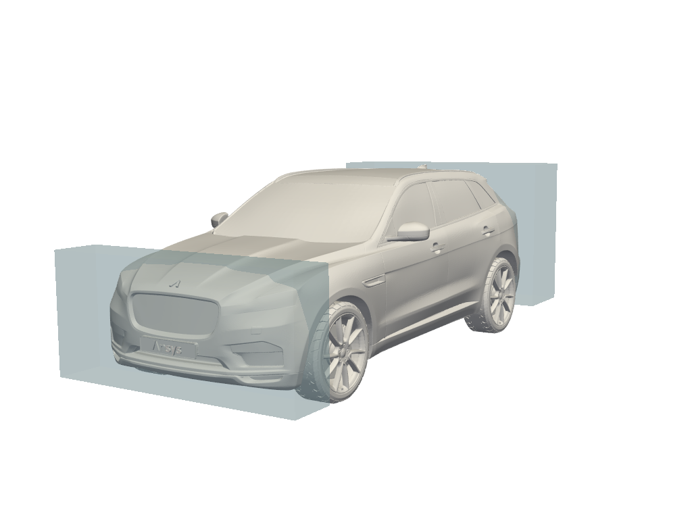
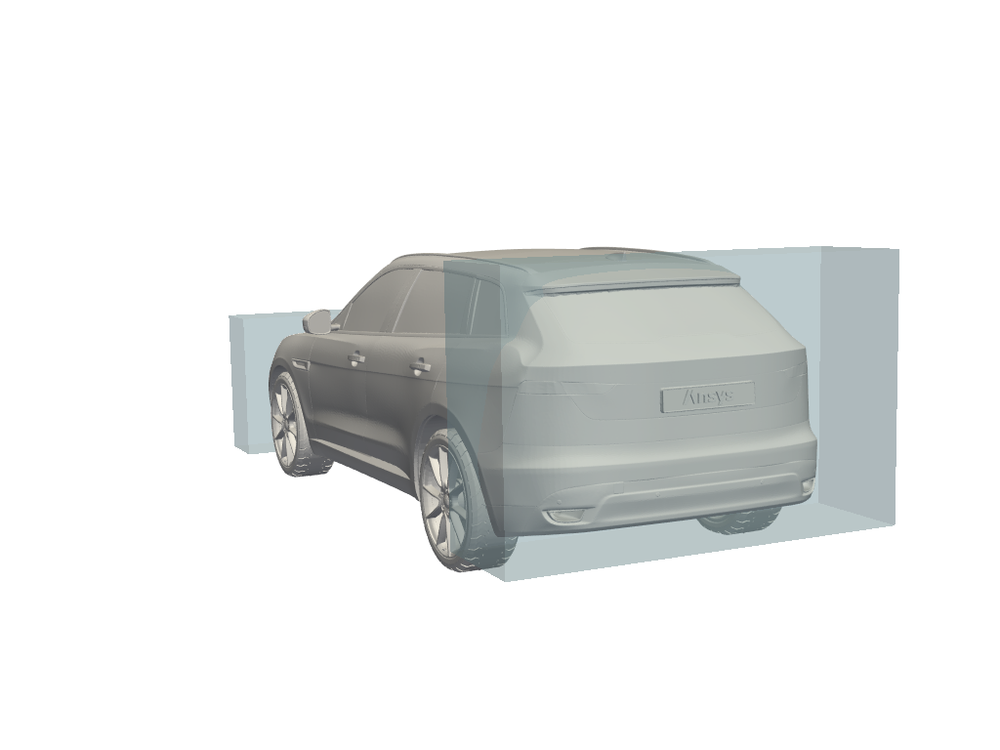
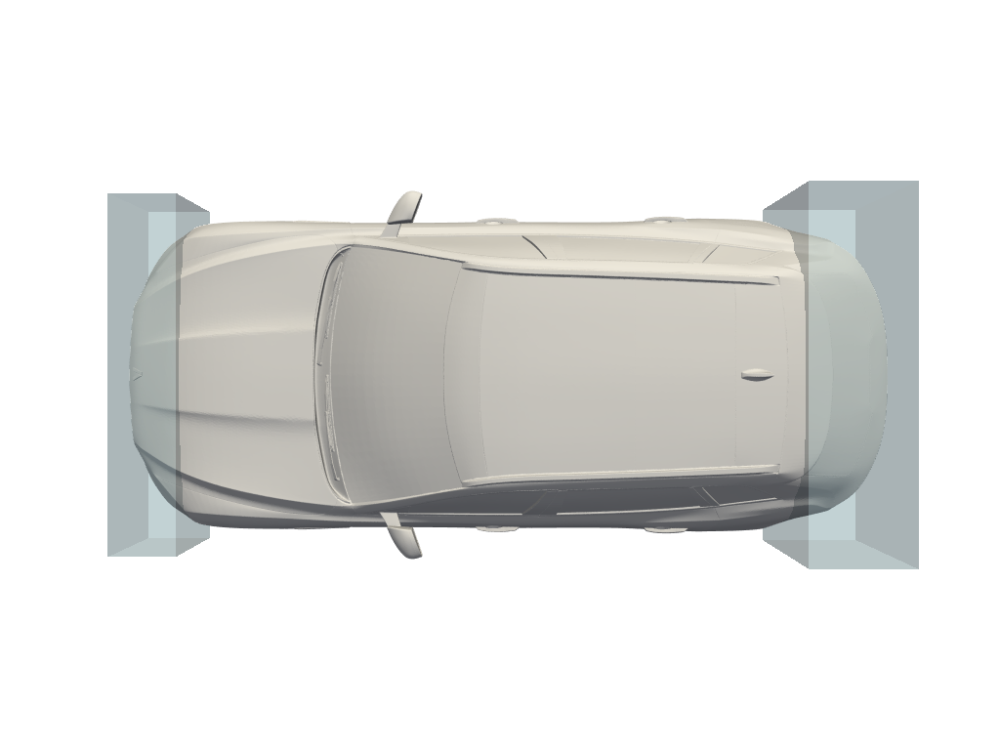
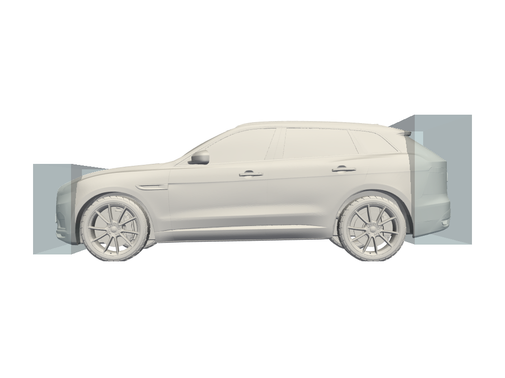

How to configure the non-parametric optimization#
Learn about the parameters to set when configuring the non-parametric optimization. For more information about using those parameters, see Optimization.
Baseline geometry (geometry)#
The baseline geometry should be chosen carefully, as it forms the foundation for the optimization process. It is recommended to select a geometry that is representative of your dataset to ensure that the optimization produces relevant results.
The supported input formats are vtp, stl, zip and cgns.
If the optimization does not show improvement after several optimization processes,
try using a different geometry from the training data as the baseline (geometry).
Always make sure the geometry is clean and of high quality, as issues like mesh errors can negatively impact the optimization process.
Bounding boxes#
Bounding boxes can be obtained from any CAD tool (for example, Ansys SpaceClaim). Bounding boxes define the regions where deformations can occur during optimization.
A good starting point is to use the bounding boxes that cover the areas most likely to influence performance improvements. If the optimization results do not improve, you can increase the size of the boxes to allow more flexibility or add additional boxes for finer control. However, avoid using excessively large boxes, as they can lead to unrealistic or unstable deformations that do not make sense physically.
Examples of bounding boxes:
|  |  |
|  |  |
Symmetries#
Symmetry constraints help reduce computational costs and ensure physically consistent results if you are looking for symmetrical optimizations.
Symmetry can be planar or axial:
Planar symmetry (
symmetriesparameter) ensures that the geometry is mirrored across a plane normal to the given direction, which is useful for designs that are identical on both sides of a plane. For example, if the design has a planar symmetry based on the “YZ” plane, then “X” is the parameter to specify.Axial symmetry (
axial_symmetryparameter) should be chosen when the deformation needs to be equal around a specific axis, resulting in rotational symmetry.
Scalars#
The values of the scalars should remain consistent with those defined in your model configuration,
so the scalars parameter must correspond to the ones defined in the SimAI workspace.
Frequent changes to scalars can create inconsistencies and reduce the reliability of optimization results.
Make adjustments only when necessary to maintain a stable and physically realistic simulation environment.
Number of iterations (n_iters)#
The number of iterations determines how many rounds of improvement will be executed in one optimization process. For quick tests, 5 iterations are usually sufficient. If convergence is slow or the optimum remains unstable, consider increasing the number of iterations to 100 or more. Before committing to long runs, you should monitor the convergence trend to ensure additional iterations will provide value rather than waste computation time.
Objective: Minimize or Maximize#
When defining an objective, focus on the most relevant performance indicator, for example, minimizing drag or maximizing lift. For non-parametric optimization, only one objective can be defined.
Maximum displacement#
The max_displacement parameter is optional. It controls the allowable deformation for each bounding box.
It is calculated from the baseline geometry and applied to the entire optimization.
If you want to use the max_displacement parameter, you must set one per bounding box defined.
If you want to use a different maximum displacement parameter for each box, you must list them in the same order as the bounding boxes.
For example, for two bounding boxes:
bounding_boxes = [[0,1,0,2,0,4],[10,2,10,4,10,5]]
max_displacement = [0.002, 0.001]
Its unit must correspond to the geometry coordinates unit. For example, if the bounding box is 2 meters long, the maximum displacement should be specified in meters as well.
Setting this value too high leads to an error that returns the maximum possible value based on the optimization parameters, while values that are too low may overly restrict the optimization.
A practical guideline is to limit displacement to a small percentage of the geometry’s characteristic length for each bounding box. This ensures that the optimized geometry remains physically realistic while still allowing meaningful shape changes.
Show progress#
The show_progress parameter determines whether progress updates are displayed during the optimization run.
It is generally recommended to enable this feature during development and testing phases
so that you can monitor the process and detect potential issues early.